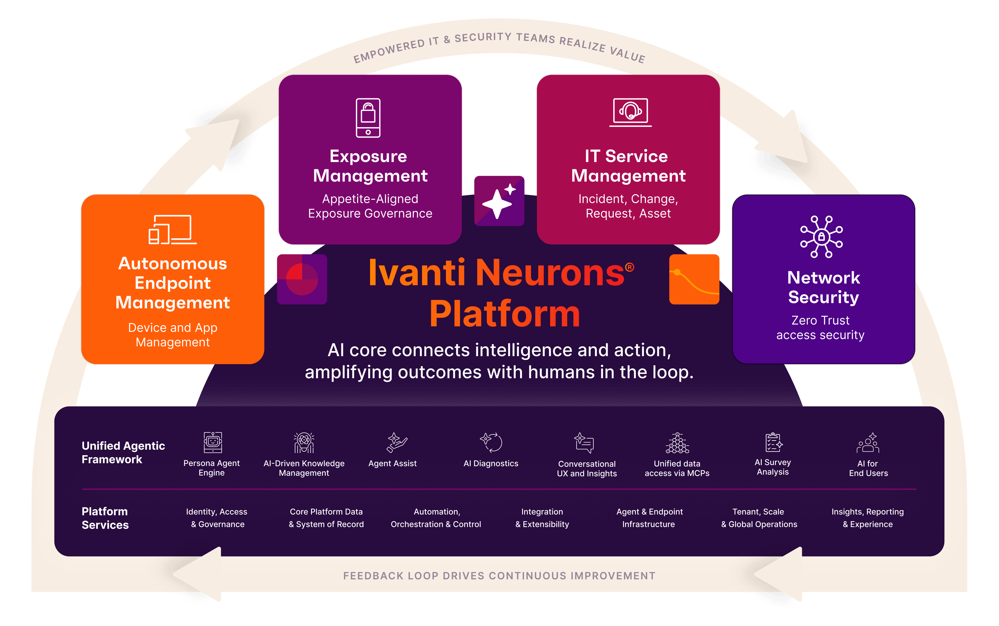

Neurons היא פלטפורמת ניהול מבוססת AI ואוטומציה, שמזהה תקלות בזמן אמת ומטפלת בהן לבד, מורידה עומס מצוות ה-IT ומשפרת את חוויית העובד.
בואו לראות את Neurons בפעולה
Neurons מרכזת ניהול תחנות קצה, עדכונים, יישומים וחוויית עובד תחת מנוע אחד שפועל ברקע.
תזמון הפצת עדכונים לפי סיכון ודחיפות, הערכת השפעה לפני פריסה, ובדיקת תאימות כדי שהשדרוג יגיע בזמן הנכון לכל קבוצה בארגון.
קובעים אילו יישומים רצים לפי משתמש, תפקיד או מיקום. רשימות מותרים דינמיות והרשאות זמניות לפרויקטים ולספקים, בלי לפתוח את כל הסביבה.
המערכת מזהה תקלות חוזרות ומיוזמת תיקון, שדרוג או ניטור ממוקד. צוות ה-IT מגדיר את הכללים, והביצוע קורה ברקע.
DEX מודד איך העובד חווה את המחשב והיישומים בזמן אמת, ומתקן ירידות ביצועים לפני שמישהו פונה לתמיכה.
Neurons סורקת את סביבת העבודה, ממפה חולשות וסיכונים, ומדרגת מה לטפל קודם לפי השפעה אמיתית על הארגון.
במקום רשימות ארוכות בלי הקשר, המערכת מחברת בין נכס, חולשה ורמת סיכון כדי שהצוות יודע בדיוק מה לסגור היום.
במקום פיזור בין מערכות נפרדות לעדכונים, יישומים, תיקונים וניטור, Neurons מחברת הכל לפלטפורמה אחת שמדברת עם כל שכבות הסביבה.
Data Fabric אחד כמקור אמת: רואים את כל המשתמשים, המכשירים והאפליקציות במקום אחד, ומחברים את הסביבה הקיימת בלי לפרק אותה.
נתונים מסונכרנים מכל מקורות הסביבה לתמונת מצב אחת לצוות ה-IT.
שלושת הממדים המרכזיים של סביבת העבודה, מקושרים זה לזה בזמן אמת.
חיבור מובנה לכלים שכבר רצים בארגון, בלי להחליף את מה שעובד.
תוצאות תפעוליות שמורגשות ביום יום, בלי להעמיס על צוות ה-IT.
ניהול, תיקון וניטור תחת ממשק אחד במקום כלים מפוזרים.
תיקונים ושדרוגים שקורים לבד לפי כללים שהצוות מגדיר.
משימות חוזרות עוברות למנוע, והצוות מתמקד בפרויקטים.
עובדים עם מחשבים ויישומים שעובדים חלק, בלי המתנה לתמיכה.
גדלים עם הארגון: נקודות קצה רבות תחת אותה פלטפורמה.
תהליך הטמעה מובנה שמוביל את הארגון משלב האפיון ועד שהפלטפורמה עובדת בשטח.
הבנת הסביבה, היעדים והכלים שכבר קיימים בארגון.
מיפוי נכסים, תהליכים ותחומי עבודה ש-Neurons תייעל.
ארכיטקטורת פריסה, חיבורי אינטגרציה ומדיניות אוטומציה.
התקנה, חיבור למקורות נתונים והפעלת כללי תיקון ראשונים.
ליווי שוטף, כיוונון כללים והרחבה לפי צמיחת הארגון.
נתאם הדגמה ממוקדת שמראה איך הפלטפורמה מנהלת, מתקנת ומשפרת את סביבת ה-IT שלכם.